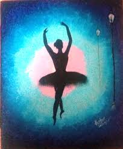

SONGS Music is love in search of a word. music is a pleasant sound which is a combination of melodies and harmony and which soothes you. Music may also refer to the art of composing such pleasant sounds with the help of the various musical instruments. A person who knows music is a Musician. The music consists of Sargam, Ragas, Taals.
------------------------  hobbies You can pursue more than one hobby too. Music, dance, reading, story writing, sports, philately, painting and theatre may all be hobbies. For instance, one could be a professional flautist, but for another playing the flute could be a hobby. A hobby is a fun activity that is pursued during one's leisure hours. Any doubt contact me . ------------------------
.jpg) ------------------------
------------------------ .jpg)